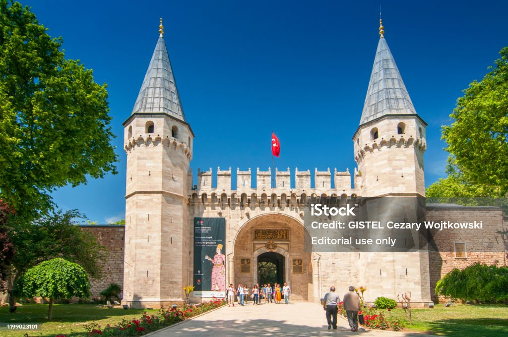
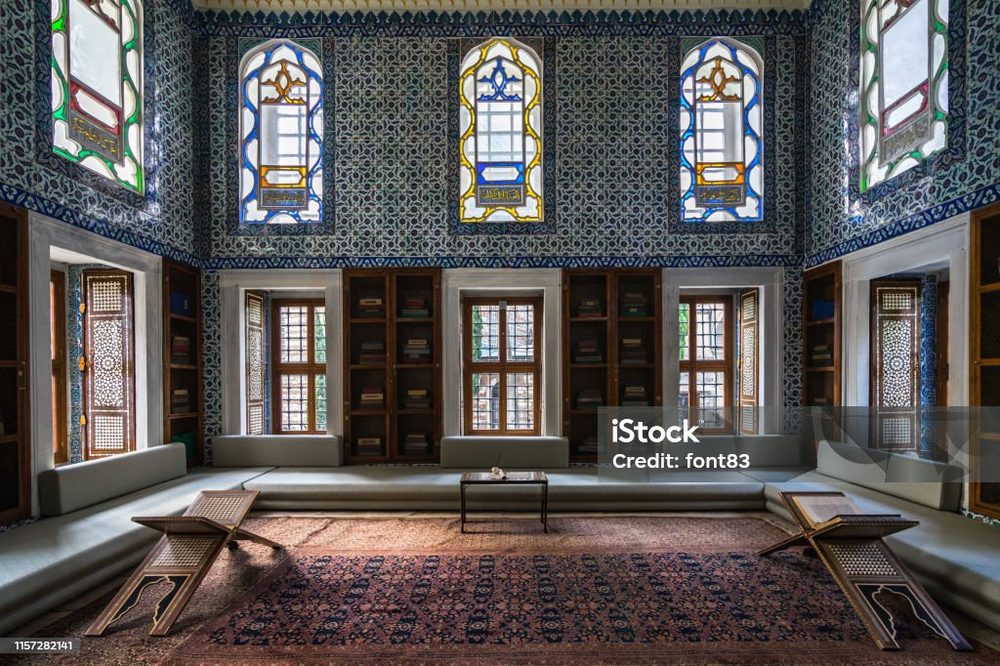
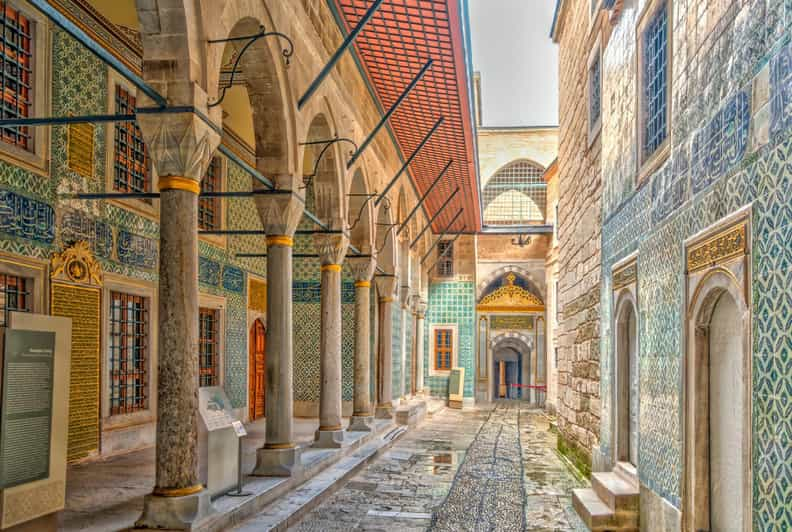

Intrarea în Palat
Intrarea principală a Palatului Topkapi, un loc grandios, marcat de coloane impunătoare și o arhitectură uimitoare.

Interiorul Palatului
În interior, palatul este plin de camere luxuriante și obiecte de artizanat, oferind o privire asupra opulenței otomane.

Haremul Palatului
Haremul este un loc fascinant, plin de povești și secrete despre viața din timpul sultanilor.
Despre Palatul Topkapi
Palatul Topkapi a fost construit în secolul al XV-lea și a fost reședința principală a sultanilor otomani. Aici se află comori de neprețuit și relicve sfinte, iar arhitectura sa reflectă splendoarea Imperiului Otoman.
Vizitează acest loc emblematic pentru a înțelege mai bine istoria și cultura imperiului otoman, și descoperă opulența și intrigile care au caracterizat viața de la curtea sultanilor.
Ce poți vizita:
- Haremul – locul unde trăiau soțiile și concubinele sultanului.
- Comorile imperiale – bijuterii și artefacte rare.
- Sălile cu arme și armuri – expoziții de arme din perioada otomană.
- Sala Tronului – unde sultanul își primea vizitatorii importanți.